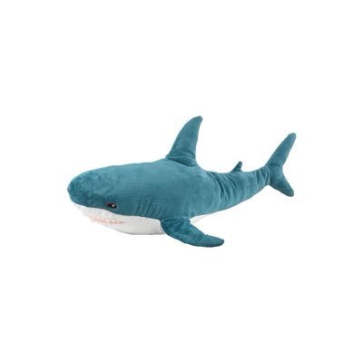

淩晨說晚安^
@LengChamSayBye
@ikeasharkZzz 刷到过，没想理，谁常人抽奖发个自拍……

赞美诗
@ikeasharkZzz
不是 我真的要生气了 一个皮下男骗门槛的为什么要偷我文案 还有2wfo 这手打一下很难吗..？
明明之前就被锤过了 你的图随便一搜xhs就能搜到原作者 还有ai图 而且还不止偷一个人的照片
你是不是有毛病 希望你说到做到真抽哈 我真的没招了… https://t.co/M3huTQNzQe